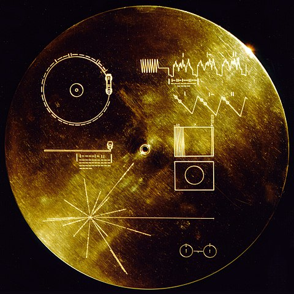

Discoverable Data Models and Extended Text Properties in the CITE Architecture
DH2019 · July, 2019 · Utrecht, Netherlands
Christopher W. Blackwell & Neel Smith
Project Architects, The Homer Multitext, C. Dué and M. Ebbott, edd.
The Homer Multitext, Casey Dué and Mary Ebbott, Editors.
A challenging problem in integrating diverse humanist data.
Conversations beginning c. 1999. Production of data since 2007. 200+ editors contributing.
Collections, Indices, Texts, & Extensions.
The basis for the Homer Multitext and some other projects.
Machine-actionable canonical citation with URNs.
URNs capturing the semantics of specific models of scholarly data.
(n.b. URNs are the immutable version of the URI standard.)
Both the CTS URN and the CITE2 URN are under expert review as proposed standards for the IETF.
“An ordered hierarchy of citation objects”
Cited with a CtsUrn, which captures the semantics of the model:
Citable objects are unique objects in versioned collections, which may or may not have intrinsic order.
Cited with a Cite2Urn, which captures the semantics of the model.
Distinct objects may have identical contents, but within in a collection, each object is uniquely identified.
A collection may be referred to either in the abstract as a notional collection, or concretely as a specific version of a notional collection.
Notional collection: “Folios of the Venetus A manuscript”
A notional collection consists merely of uniquely identified objects.
urn:cite2:hmt:msA:12r ➛ An object in a notional collection
Concrete collection: “The Homer Multitext collection of folios of the Venetus A manuscript, version 1”
In a concrete collection, each objects is, itself, a collection of citable, typed property values.
urn:cite2:hmt:msA.v1:12r ➛ An object in a versioned collection
urn:cite2:hmt:msA.v1.label:12r ➛ A citable property value of an object in a versioned collection
The CITE Architecture seeks to bring to a computational environment the same flexibility regarding identity that scholars have always enjoyed.
Indices can be s-v-o relations among URNs, with the verb expressed as a CITE2 URN as well.
Or, CITE Objects can have properties of type CtsUrn or Cite2Urn.
So…
Scholarly Primitives & Compositions Thereof
The CITE Exchange format.
A plain-text, self-documenting, serialization of an integrated digital library.

A CEX file provides access to pieces of data—texts or objects—and establish relations among them, uniquely identified with machine-actionable URNs.
Extensions are merely other uniquely identified pieces of data, in other relations to citable data.
A service or app can ignore these and continue to deliver useful, itegrated data. Or it can implement them in fancy ways.
Citing and resolving images
The old practice: Citation to a place where an image can be found.
We prefer to preserve the scholarly identity of an image, recognizinig tha the “same” image might exist in different locations, in different transformations.
A collection of images is like any other collection in CITE.
The citeimage datamodel has only three propertie:
citebinaryimage datamodelciteimageThe effect…
Extended String Type Properties
There are many specific kinds of well-known text, including “Well-Known Text”:
Build this presentation with:
pandoc -t revealjs dh2019.md -s -o dh2019.html --metadata pagetitle=presentation -V theme=solarized
The result will be dh2019.html.